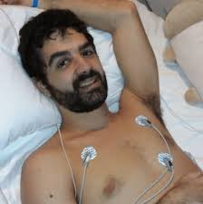

Suspiro
News
Suspiro
News

Fotos: reprodução-Instagram
Um raio de alegria e superação! Vinícius Brito, 24 anos, do Espírito Santo, o segundo paciente a receber polilaminina após lesão medular traumática, surpreendeu ao mostrar movimentos nas pernas em vídeo de reabilitação com eletroestimulação funcional (FES). Após acidente em cachoeira, ele recebeu a proteína em até 72 horas, e agora celebra respostas motoras que reacendem a esperança na recuperação.
Acidente e Resgate Rápido No dia 4 de janeiro, Vinícius bateu a cabeça em pedra durante mergulho em Santa Leopoldina (ES), resultando em lesão medular aguda com perda de movimentos nas pernas e pouca sensibilidade nos braços. Socorrido pelo Samu e Notaer, chegou ao HEUE em Vitória com diagnóstico confirmado. Equipe liderada por Olavo Borges Franco (UFRJ) e Bruno Alexandre Côrtes aplicou a polilaminina na madrugada, dentro do protocolo ideal para maximizar regeneração neural.
Como Funciona a Polilaminina Desenvolvida pela UFRJ com apoio FAPERJ e Cristália, essa proteína recria a laminina embrionária, formando "andaime" que guia axônios a reconectarem após trauma espinhal. Aplicada cirurgicamente no local da lesão, estimula novos caminhos neurais, promovendo recuperação de mobilidade. Estudos iniciais mostram ganhos expressivos em pacientes, com taxa de 75% apresentando melhoras, superior aos 15% históricos sem intervenção.
Avanço na Reabilitação Meses depois, vídeo nas redes mostra pernas de Vinícius respondendo à FES, que ativa músculos via impulsos elétricos, preservando massa, circulação e conexões neuromotoras. Combinada à fisioterapia intensiva, prepara o corpo para ganhos funcionais. Seguidores celebram: "Viva polilaminina e a persistência de Tatiana Sampaio!", reforçando o papel da reabilitação. Vinícius segue monitorado, com evolução promissora em estudos clínicos fase 1 aprovados pela Anvisa.